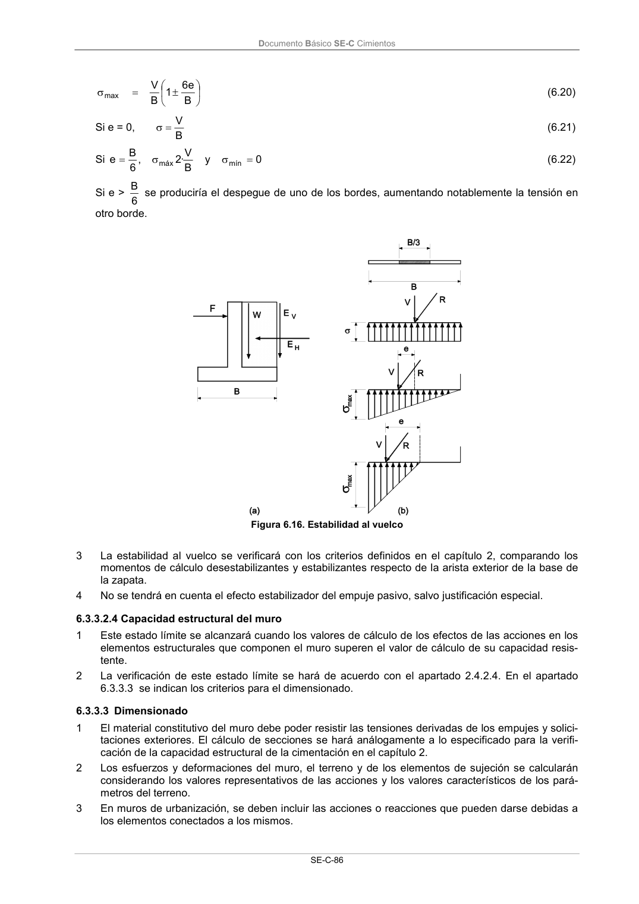

DB-SE-C · 6.3.3.3 Dimensionado · versión 2019-12-20 · capa oficial
Formatos: JSON compacto · Markdown · PDF fuente
Ámbito del documento · texto del ámbito · documento y tablas
ID técnico a0192 · PDF pág. 91-92 · jerarquía no validada por persona · contrastado con el literal de la página 91 (candidato tipográfico); no validado por persona · padre: raíz
6.3.3.3 Dimensionado 1 El material constitutivo del muro debe poder resistir las tensiones derivadas de los empujes y solici- taciones exteriores. El cálculo de secciones se hará análogamente a lo especificado para la verifi- cación de la capacidad estructural de la cimentación en el capítulo 2. 2 Los esfuerzos y deformaciones del muro, el terreno y de los elementos de sujeción se calcularán considerando los valores representativos de las acciones y los valores característicos de los pará- metros del terreno. 3 En muros de urbanización, se deben incluir las acciones o reacciones que pueden darse debidas a los elementos conectados a los mismos. Documento Básico SE-C Cimientos SE-C-87 4 Los esfuerzos que se deben tomar para el dimensionado son los que se deduzcan en las compro- baciones de estabilidad en las diferentes fases de la ejecución y las comprobaciones de estados lí- mite de servicio, con los que se obtendrá la envolvente de los máximos momentos flectores y es- fuerzos cortantes en el muro. Los esfuerzos obtenidos sobre los elementos estructurales se mayo- rarán considerando los coeficientes E definidos en la tabla 2.1. 5 Los estados límite de servicio se analizarán con los criterios definidos en el apartado 6.3.1.2.

PDF fuente redistribuible: copia fiel enlazada en esta página (SHA256 verificado).